Reduced models¶
The enormous complexity of biophysically detailed multi-compartmental models at network-level generally prevents the derivation of interpretable descriptions that explain how neurons transform synaptic input into action potential output, and how these input-output computations depend on synaptic, cellular and network properties. Here we introduce an approach to reveal input-output computations that neurons in the cerebral cortex perform upon sensory stimulation. A realistic multi-scale cortex model is reduced to the minimal description that accounts for in vivo observed responses.
This tutorial will show how these complex multiscale models can be reduced to the minimum set of parameters that are required to explain the receptive field and latency of responses of L5PTs under the in vivo conditions covered in the previous examples.
Adapt the path below to where you saved the data folder from https://doi.org/10.7910/DVN/QV7JIF (download from Harvard Dataverse)
[5]:
BASEDIR = '/path/where/you/saved/data/'
[4]:
# append code repository to pythonpath
import sys
sys.path.append(BASEDIR + 'code')
[7]:
# import from python ecosystem
import numpy as np
import pandas as pd
import os
import matplotlib.pyplot as plt
from functools import partial
import dask
from collections import defaultdict
from functools import partial
import distributed
[9]:
%matplotlib inline
[10]:
from data_base import DataBase
from visualize.histogram import histogram
from visualize.rasterplot import rasterplot
from data_base.analyze.temporal_binning import temporal_binning_pd
import Interface as I
[12]:
# set up a dask cluster as described here: https://distributed.dask.org/en/stable/quickstart.html
client = I.get_client()
client
[12]:
Client
|
Cluster
|
[12]:
whiskers = ['B1', 'B2', 'B3', 'C1', 'C2', 'C3', 'D1', 'D2', 'D3', 'E2']
[16]:
models = range(1,8)
Load multi-scale model simulation data¶
Load pre-binned synapse activations¶
This is the synaptic input received by the multi-compartmental model (MCM) in principal whisker simulations. Another visualisation of this input can be seen in Fig. 1F, where the spatial distribution is also shown.
[15]:
model = 1
whisker = 'C2'
[16]:
# each compressed numpy archive contains a single numpy array
sa = np.load(BASEDIR + "model_{}__binned_synapse_activations_spatiotemporal_EI__{}.npz".format(model, whisker))
sa = sa['arr_0']
[17]:
sa.shape # (excitatory/inhibitory, spatial bins, trials, temporal bins)
[17]:
(2, 30, 81000, 400)
[18]:
saexc = sa[0, :, :, :]
sainh = sa[1, :, :, :]
[19]:
# get mean count of active synapses onto the whole neuron in each timebin
saexc_mean = saexc.sum(axis = 0).mean(axis = 0)
sainh_mean = sainh.sum(axis = 0).mean(axis = 0)
[20]:
fig = plt.figure(figsize = (8, 3))
ax = fig.add_subplot(1,1,1)
histogram((list(range(401)), saexc_mean), fig = ax, label = 'excitatory', colormap = {'excitatory':'red'})
histogram((list(range(401)), sainh_mean * -1), fig = ax, label = 'inhibitory', colormap = {'inhibitory':'navy'})
plt.xlim(0, 345)
plt.ylabel('number of active synapses')
plt.legend(bbox_to_anchor = (1.3,1))
plt.xlabel('time (ms)')
[20]:
<matplotlib.text.Text at 0x2b97bd46b910>
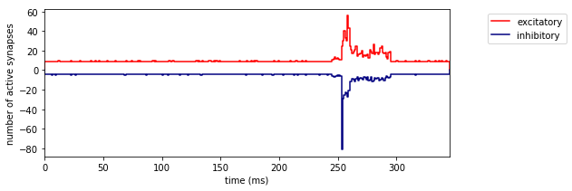
Visualise MCM responses¶
These are the responses of the MCM to the above synaptic input (also shown in Fig. 1I).
[21]:
model = 1
whisker = 'C2'
[22]:
# load spike times for a principal whisker stimulus
st = pd.read_csv(BASEDIR + "model_{}__spike_times_MCM__{}.csv".format(model, whisker))
[45]:
# the sensory stimulus was always applied at 245 ms, because
# the multi-compartmental model needs some time from initialisation to reach a steady state
# therefore the first 150 ms of each simulation should be discarded - spikes in this period are initialisation artefacts
ax = plt.gca()
histogram(temporal_binning_pd(st, min_time = 0, max_time = 345, bin_size = 1), fig = ax)
plt.ylabel('AP probability')
plt.xlabel('time (ms)')
plt.title('average whisker stimulus response (MCM)')
[45]:
<matplotlib.text.Text at 0x2b448b48f050>
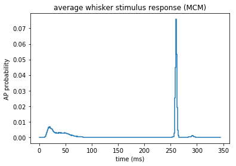
[48]:
ax = plt.gca()
rasterplot(st[4000:6000], fig = ax)
plt.xlabel('time (ms)')
plt.ylabel('trial index')
[48]:
<matplotlib.text.Text at 0x2b448b557b90>
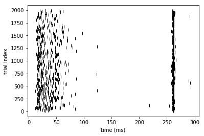
Reduced model inference¶
[16]:
# we will store all the parameters of the reduced models in a dictionary
# here we show how to make a reduced model from one exemplary multi-compartmental model
# the procedure was repeated for all 7 MCMs
rm_dict = {}
rm_dict[model] = {}
[17]:
import modular_reduced_model_inference
from modular_reduced_model_inference import RaisedCosineBasis
RaisedCosine basis functions¶
The spatial and temporal filters are composed of a set of basis functions:
\(w_\tau = \sum_i x_i f_i(\tau) = \mathbf{x} \cdot \mathbf{f}(\tau)\)
\(w_z = \sum_i y_i g_i(z) = \mathbf{y} \cdot \mathbf{g}(z)\)
Here, \(\mathbf{x}\) and \(\mathbf{y}\) are learnable parameters, and \(\mathbf{f}\) and \(\mathbf{g}\) are vectors of basis functions. These basis functions are raised cosines, which have the following form:
\(f(x) = \frac{1}{2}cos(a \cdot log[x+c] - \phi_i) + \frac{1}{2}\)
[18]:
RaisedCosineBasis_spatial = modular_reduced_model_inference.RaisedCosineBasis(a = 3, c = 5, phis = np.arange(3,12, 1.5), width = 30, reversed_ = False)
RaisedCosineBasis_temporal = modular_reduced_model_inference.RaisedCosineBasis(a = 2, c = 1, phis = np.arange(1,11, 0.5), width = 80, reversed_ = True)
[19]:
# the basis functions for the spatial filters
# the weight applied to each of these functions is the target of the optimiser
RaisedCosineBasis_spatial.visualize(plot_kwargs={'c': 'k', 'alpha': 1})
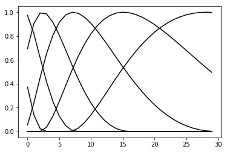
[20]:
# the basis functions for the temporal filters
RaisedCosineBasis_temporal.visualize(plot_kwargs={'c': 'k', 'alpha': 1})
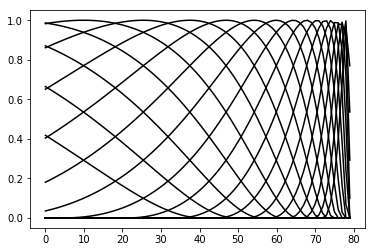
Spatiotemporal filter inference¶
[21]:
# we also provide precomputed spatiotemporal filters for all models used in our paper
# which are visualized in the next section
[22]:
model = 1
whiskers = ['C2'] # it is also possible to infer reduced models from only a subset of the data. We use this here as an example,
# with only the principal (C2) whisker. To run inference on the full dataset, uncomment the line below:
# whiskers = ['B1', 'B2', 'B3', 'C1', 'C2', 'C3', 'D1', 'D2', 'D3', 'E2']
# be aware that a large amount of RAM is necessary to handle the full dataset
mdb_list = []
for whisker in whiskers:
mdb_list.append({'spike_times': BASEDIR + "model_{}__spike_times_MCM__{}.csv".format(model, whisker),
'binned_synapse_activation':BASEDIR + "model_{}__binned_synapse_activations_spatiotemporal_EI__{}.npz".format(model, whisker)})
[24]:
# this cell takes a few minutes to run as it loads and uncompresses all the MCM simulation data
# uncompression takes a long time so you may want to save the uncompressed array in case you want to use it again
name = 'test'
rm = modular_reduced_model_inference.Rm(name,
mdb = mdb_list,
tmin = 260, #timepoint_of_max_response
tmax = 261, #timepoint_of_max_response+1
width = 80)
# make simulation data available to the reduced model
D = modular_reduced_model_inference.DataExtractor_spatiotemporalSynapseActivation
rm.add_data_extractor('spatiotemporalSa', D())
rm.add_data_extractor('st', modular_reduced_model_inference.DataExtractor_spiketimes())
rm.add_data_extractor('y', modular_reduced_model_inference.DataExtractor_spikeInInterval())
rm.add_data_extractor('ISI', modular_reduced_model_inference.DataExtractor_ISI())
The code above made the data available to the reduced model object, and cropped out data w.r.t. the selected timepoints
[25]:
st = rm.data_extractors['st'].get() # spike times
[26]:
# the reduced model considers spike times up to tmax
ax = plt.gca()
histogram(temporal_binning_pd(st), fig = ax)
plt.ylabel('AP probability')
plt.xlabel('time (ms)')
plt.title('average whisker stimulus response (MCM)')
[26]:
<matplotlib.text.Text at 0x2b3c506b9e10>
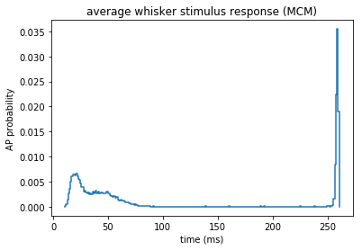
[27]:
# define a strategy which evaluates simulation trials based on spatiotemporal filters
RaisedCosineBasis_spatial = RaisedCosineBasis(a = 3, c = 5, phis = np.arange(3,12, 1.5), width = 30, reversed_ = False)
RaisedCosineBasis_temporal = RaisedCosineBasis(a = 2, c = 1, phis = np.arange(1,11, 0.5), width = 80, reversed_ = True)
len_z = len(RaisedCosineBasis_spatial.phis) # number of parameters of the spatial filter
len_t = len(RaisedCosineBasis_temporal.phis) # number of parameters of the temporal filter
strategy = modular_reduced_model_inference.Strategy_spatiotemporalRaisedCosine('SAspatiotemporalRaisedCosine', RaisedCosineBasis_spatial, RaisedCosineBasis_temporal)
rm.add_strategy(strategy)
# add solver
solver = modular_reduced_model_inference.Solver_COBYLA('cobyla')
strategy.add_solver(solver)
for lv in range(3): # make 3 random train/test splits
# rm.DataSplitEvaluation.add_random_split('.7_{}'.format(lv), percentage_train=.7)
rm.DataSplitEvaluation.add_isi_dependent_random_split('ISI50_.7_{}'.format(lv),min_isi = 50, percentage_train=.7)
[28]:
for lv in range(3):
rm.run(client)
starting remote optimization SAspatiotemporalRaisedCosine cobyla
starting remote optimization SAspatiotemporalRaisedCosine cobyla
starting remote optimization SAspatiotemporalRaisedCosine cobyla
[30]:
result_df = rm.get_results(client)
# If you get ValueError: Only one class present in y_true. ROC AUC score is not defined in that case, it means that the
# reduced model failed (this happens for example due to a lack of spikes in the interval used for inference)
[31]:
result_df
[31]:
| score | success | x | |||||
|---|---|---|---|---|---|---|---|
| strategy | solver | split | subsplit | run | |||
| SAspatiotemporalRaisedCosine | cobyla | ISI50_.7_0 | subtest1 | 0 | -0.992066 | False | [0.959447821583, 0.127607023899, 1.0997403028,... |
| 1 | -0.993329 | False | [4.94194310094, 4.53524909301, 2.72658190132, ... | ||||
| 2 | -0.992040 | False | [3.21385300474, 0.511869924346, 1.29909420539,... | ||||
| subtest2 | 0 | -0.989921 | False | [0.959447821583, 0.127607023899, 1.0997403028,... | |||
| 1 | -0.990491 | False | [4.94194310094, 4.53524909301, 2.72658190132, ... | ||||
| 2 | -0.989427 | False | [3.21385300474, 0.511869924346, 1.29909420539,... | ||||
| test | 0 | -0.991523 | False | [0.959447821583, 0.127607023899, 1.0997403028,... | |||
| 1 | -0.992149 | False | [4.94194310094, 4.53524909301, 2.72658190132, ... | ||||
| 2 | -0.991154 | False | [3.21385300474, 0.511869924346, 1.29909420539,... | ||||
| train | 0 | -0.984188 | False | [0.959447821583, 0.127607023899, 1.0997403028,... | |||
| 1 | -0.985860 | False | [4.94194310094, 4.53524909301, 2.72658190132, ... | ||||
| 2 | -0.983728 | False | [3.21385300474, 0.511869924346, 1.29909420539,... | ||||
| ISI50_.7_1 | subtest1 | 0 | -0.992268 | False | [0.617738981647, 4.44972179139, -0.15160990483... | ||
| 1 | -0.991068 | False | [-0.917824891731, 1.87739540229, 0.20091202048... | ||||
| 2 | -0.990466 | False | [2.37342377281, 1.06038573381, 0.254391539931,... | ||||
| subtest2 | 0 | -0.990166 | False | [0.617738981647, 4.44972179139, -0.15160990483... | |||
| 1 | -0.989424 | False | [-0.917824891731, 1.87739540229, 0.20091202048... | ||||
| 2 | -0.987997 | False | [2.37342377281, 1.06038573381, 0.254391539931,... | ||||
| test | 0 | -0.991684 | False | [0.617738981647, 4.44972179139, -0.15160990483... | |||
| 1 | -0.990862 | False | [-0.917824891731, 1.87739540229, 0.20091202048... | ||||
| 2 | -0.989854 | False | [2.37342377281, 1.06038573381, 0.254391539931,... | ||||
| train | 0 | -0.985018 | False | [0.617738981647, 4.44972179139, -0.15160990483... | |||
| 1 | -0.982940 | False | [-0.917824891731, 1.87739540229, 0.20091202048... | ||||
| 2 | -0.981275 | False | [2.37342377281, 1.06038573381, 0.254391539931,... | ||||
| ISI50_.7_2 | subtest1 | 0 | -0.992971 | True | [-1.17808668604, -2.90042159759, -0.4544114625... | ||
| 1 | -0.992882 | True | [-0.397515253276, -1.95891392491, -0.561910247... | ||||
| 2 | -0.992944 | False | [1.67019871925, 2.8916096642, 2.52633336423, -... | ||||
| subtest2 | 0 | -0.990368 | True | [-1.17808668604, -2.90042159759, -0.4544114625... | |||
| 1 | -0.990534 | True | [-0.397515253276, -1.95891392491, -0.561910247... | ||||
| 2 | -0.990600 | False | [1.67019871925, 2.8916096642, 2.52633336423, -... | ||||
| test | 0 | -0.991989 | True | [-1.17808668604, -2.90042159759, -0.4544114625... | |||
| 1 | -0.992090 | True | [-0.397515253276, -1.95891392491, -0.561910247... | ||||
| 2 | -0.992083 | False | [1.67019871925, 2.8916096642, 2.52633336423, -... | ||||
| train | 0 | -0.985961 | True | [-1.17808668604, -2.90042159759, -0.4544114625... | |||
| 1 | -0.985813 | True | [-0.397515253276, -1.95891392491, -0.561910247... | ||||
| 2 | -0.985702 | False | [1.67019871925, 2.8916096642, 2.52633336423, -... |
Visualize spatiotemporal filters¶
[33]:
RaisedCosineBasis_spatial = RaisedCosineBasis(a = 3, c = 5, phis = np.arange(3,12, 1.5), width = 30, reversed_ = False)
RaisedCosineBasis_temporal = RaisedCosineBasis(a = 2, c = 1, phis = np.arange(1,11, 0.5), width = 80, reversed_ = True)
strategy = modular_reduced_model_inference.Strategy_spatiotemporalRaisedCosine(
'SAspatiotemporalRaisedCosine',
RaisedCosineBasis_spatial,
RaisedCosineBasis_temporal)
# manually do what happens in rm.add_strategy(strategy) in order to get the shape of the basis functions
# this avoids having to load in the dataset
strategy.len_z = len(RaisedCosineBasis_spatial.phis) # number of parameters of the spatial filter
strategy.len_t = len(RaisedCosineBasis_temporal.phis) # number of parameters of the temporal filter
strategy.groups = [('EXC',), ('INH',)] # excitatory and inhibitory
strategy.convert_x = partial(strategy._convert_x_static, strategy.groups, strategy.len_z)
[34]:
# the reduced model filters have one unconstrained parameter: they can be multiplied by a scalar
# normalize such that excitatory weight in the spatial filter at soma distance 0 is 1
strategy.visualize(result_df, normalize = True)
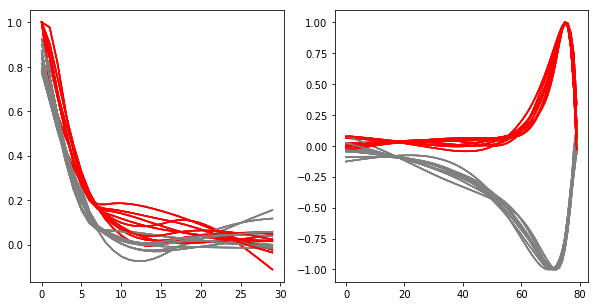
[35]:
# visualize models before normalization
strategy.visualize(result_df, normalize = False)
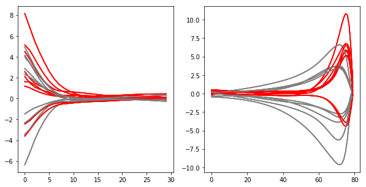
[36]:
# get numerical values of kernels visualized above
index_best_model = result_df.score.argmin()
spatiotemporal_filters = strategy.get_kernel_dict(result_df.loc[index_best_model].x, normalize = True)
spatiotemporal_filters
[36]:
{'s_exc': array([ 0.99999994, 0.83999312, 0.67933828, 0.54754567, 0.42797816,
0.32122907, 0.23403572, 0.16860136, 0.12514773, 0.09235044,
0.06582323, 0.04554006, 0.03117438, 0.02222843, 0.01811939,
0.01823592, 0.02197397, 0.0273118 , 0.03221476, 0.03664161,
0.04057404, 0.04400725, 0.04694676, 0.04940576, 0.05140304,
0.05296133, 0.05410602, 0.05486407, 0.05526331, 0.05533172], dtype=float32),
's_inh': array([ 7.93388784e-01, 6.80935025e-01, 5.25943398e-01,
3.73791099e-01, 2.47634768e-01, 1.55127957e-01,
9.60600004e-02, 6.68410510e-02, 6.18851073e-02,
6.21100441e-02, 6.06311373e-02, 5.78291751e-02,
5.40423021e-02, 4.95610572e-02, 4.46290970e-02,
3.94468531e-02, 3.41763236e-02, 2.90312413e-02,
2.42002122e-02, 1.97337605e-02, 1.56642124e-02,
1.20097343e-02, 8.77735205e-03, 5.96547779e-03,
3.56593728e-03, 1.56562449e-03, -5.21633774e-05,
-1.30666094e-03, -2.21877987e-03, -2.81043258e-03], dtype=float32),
't_exc': array([-0.02400237, -0.02032194, -0.01662141, -0.01290308, -0.00916938,
-0.00542588, -0.00174317, 0.00184482, 0.0053307 , 0.00870685,
0.01196511, 0.01509703, 0.01809369, 0.02094587, 0.02364372,
0.02617702, 0.02853503, 0.0307065 , 0.03267968, 0.0344422 ,
0.03598117, 0.03728301, 0.03837968, 0.03944859, 0.04050721,
0.04155323, 0.04258426, 0.04359765, 0.04459048, 0.04555977,
0.04650225, 0.04741433, 0.04829218, 0.04913172, 0.04992854,
0.05067915, 0.05138324, 0.05203624, 0.05263265, 0.05316664,
0.05363193, 0.05403322, 0.05440999, 0.05476375, 0.0550912 ,
0.05543467, 0.05603194, 0.05693725, 0.05817533, 0.05977213,
0.06172585, 0.06401034, 0.06664608, 0.06978153, 0.07385685,
0.07898357, 0.085251 , 0.09283666, 0.10192585, 0.11262625,
0.12500095, 0.13914779, 0.15533496, 0.17417821, 0.19665515,
0.22482018, 0.25910693, 0.29907584, 0.34764871, 0.40801415,
0.48474893, 0.58128369, 0.69691992, 0.82134211, 0.9336347 ,
1. , 0.97017372, 0.79743534, 0.46252084, -0.02363155], dtype=float32),
't_inh': array([-0.04599673, -0.04736574, -0.04880098, -0.05030387, -0.05187581,
-0.05352015, -0.05528356, -0.05718811, -0.05923788, -0.06143703,
-0.06378973, -0.06630028, -0.06897295, -0.07181212, -0.07482215,
-0.07800741, -0.08137235, -0.08492143, -0.08865899, -0.09258938,
-0.09671696, -0.10104594, -0.10560232, -0.11048119, -0.11570197,
-0.12127499, -0.12721042, -0.13351859, -0.14020956, -0.14729342,
-0.15477996, -0.16267864, -0.17099871, -0.17974874, -0.18893673,
-0.19859833, -0.20884515, -0.21970053, -0.23117824, -0.24329092,
-0.2560496 , -0.269458 , -0.28349999, -0.29817542, -0.31348261,
-0.3294391 , -0.34615639, -0.3636474 , -0.38190308, -0.40090674,
-0.42065942, -0.44117498, -0.46241164, -0.48448306, -0.50787866,
-0.53262049, -0.55867487, -0.58596104, -0.61436367, -0.64381152,
-0.6744687 , -0.70618039, -0.73851043, -0.77058583, -0.80224133,
-0.83385348, -0.8649801 , -0.89593261, -0.92658406, -0.956218 ,
-0.98191792, -0.9982118 , -1.00000012, -0.98073751, -0.92507899,
-0.81327784, -0.63900936, -0.38829231, -0.06644553, 0.14063495], dtype=float32)}
[37]:
rm_dict[model]['spatiotemporal_filters'] = spatiotemporal_filters
Calculate WNI values with spatiotemporal filters¶
[86]:
# calculate all the WNI values at relevant timepoints - we will need them again to estimate the ISI-dependent penalty
@dask.delayed
def calculate_WNI_values(sa_file, kernel_dict, model, whisker, outdir):
timebins = len(range(220, 271))
sa = np.load(sa_file)
sa = sa['arr_0']
n_cells = sa.shape[2]
WNI_df = pd.DataFrame(index = range(n_cells), columns = range(220, 271))
SAexc = sa[0,:,:,:]
SAinh = sa[1,:,:,:]
SAexc = np.asarray(SAexc)
SAinh = np.asarray(SAinh)
s_exc = kernel_dict['s_exc']
s_inh = kernel_dict['s_inh']
t_exc = kernel_dict['t_exc']
t_inh = kernel_dict['t_inh']
SAinh_cumulative = np.ndarray((n_cells, 400))
SAexc_cumulative = np.ndarray((n_cells, 400))
for t, timebin in enumerate(range(220-80, 271)): # for all timebins relevant to period of interest
## get excitatory and inhibitory input, spatially binned for the CURRENT timebin
SAexc_timebin = SAexc[:, :, timebin]
SAinh_timebin = SAinh[:, :, timebin]
## apply spatial kernel to the current timebin
SAexc_timebin = sum([o*s for o, s in zip(SAexc_timebin, s_exc)])
SAinh_timebin = sum([o*s for o, s in zip(SAinh_timebin, s_inh)])
for cell in range(n_cells):
SAinh_cumulative[cell][timebin] = SAinh_timebin[cell]
SAexc_cumulative[cell][timebin] = SAexc_timebin[cell]
## apply temporal kernel to timebins of interest
for t, timebin in enumerate(range(220, 271)):
# print timebin
for cell in range(n_cells):
SAexc_window = SAexc_cumulative[cell][timebin-79:timebin+1]
SAinh_window = SAinh_cumulative[cell][timebin-79:timebin+1]
SAexc_window = sum([o*s for o, s in zip(SAexc_window, t_exc)])
SAinh_window = sum([o*s for o, s in zip(SAinh_window, t_inh)])
## get weighted net input for each cell
WNI = SAexc_window + SAinh_window
WNI_df.iloc[cell, t] = WNI
name = 'model_{}__{}.csv'.format(model, whisker)
WNI_df.to_csv(outdir + name)
[ ]:
# we provide WNI values for the exemplary spatiotemporal filters generated in this notebook under the following key:
outdir = BASEDIR + 'precalculated_WNI_values__model_1__C2'
[72]:
# to calculate them yourself, make a folder to store them in:
outdir = BASEDIR + 'precalculated_WNI_values/'
os.mkdir(outdir)
[87]:
# takes about 20 mins per whisker on a single core
delayeds = []
index = []
for whisker in whiskers:
sa_file = BASEDIR + "model_{}__binned_synapse_activations_spatiotemporal_EI__{}.npz".format(model, whisker)
d = calculate_WNI_values(sa_file, spatiotemporal_filters, model, whisker, outdir)
delayeds.append(d)
index.append((model, whisker))
[88]:
# to prevent memory issues - each worker will load around 25GB of data
# adjust the number of cores working per node according to your memory limits
workers_per_node = 5
from itertools import groupby
workers = client.scheduler_info()['workers'].keys()
workers = sorted(workers, key = lambda x: x.split(':')[1])
w = [list(w)[:workers_per_node] for group, w in groupby(workers, lambda x: x.split(':')[1])]
w = [w for w in w for w in w]
[89]:
futures = client.compute(delayeds, workers=w)
Nonlinearity¶
[91]:
def group_bins(helper_df, min_items = 10):
# https://codereview.stackexchange.com/questions/12753/taking-the-first-few-items-of-a-list-until-a-target-sum-is-exceeded/12759
total_items = 0
rows_to_group = []
groupings = []
for row in range(len(helper_df.index)):
items = helper_df.iloc[row, 3]
total_items += items # keep a running total of number of datapoints
rows_to_group.append(row)
if total_items >= min_items: # once we have enough datapoints, save the grouping and continue
total_items = 0
groupings.append(rows_to_group)
rows_to_group = []
elif row == range(len(helper_df.index))[-1]: # or if it's the last bin, which might get skipped otherwise
groupings.append([row])
# check if the last bin is too small, merge with second to last if it is
last_binsize = 0
for row in groupings[-1]:
last_binsize += helper_df.iloc[row, 3]
if last_binsize < min_items:
new_grouping = groupings[:-2]
last_bins = groupings[-2:]
new_grouping.append([i for sublist in last_bins for i in sublist])
groupings = new_grouping
return groupings
def signchange(x,y):
if x / abs(x) == y / abs(y):
return False
else:
return True
def linear_interpolation_between_pairs(X,Y, x, top = 'inf', bottom = 'min'):
if x > max(X):
if top == 'inf':
result = np.inf
elif top == 'max':
result = max(Y)
elif x < min(X):
if bottom == 'inf':
result = -np.inf
elif bottom == 'min':
result = min(Y)
elif float(x) in X: # don't need to interpolate, causes assertion error
result = Y[X.index(x)]
else:
pair = [lv for lv in range(len(X)-1) if signchange(X[lv]-x, X[lv+1]-x)]
# X[lv] <= x < X[lv + 1]]
assert(len(pair) == 1)
pair = pair[0]
m = (Y[pair+1]-Y[pair]) / (X[pair+1]-X[pair])
c = Y[pair]-X[pair]*m
result = m*x+c
return result
def variable_stepsize_nonlinearity(wni_values, spike_times, spike_before = None, lookup_series_stepsize = 3, min_items = 10):
pdf2 = pd.DataFrame(dict(wni_values = wni_values, spike = spike_times))
if spike_before is not None:
pdf = pdf2[~spike_before]
else:
pdf = pdf2
bins = range(int(np.floor(pdf['wni_values'].min())), int(np.floor(pdf['wni_values'].max())) + lookup_series_stepsize + 1, lookup_series_stepsize)
pdf['bin'] = pd.cut(pdf['wni_values'], bins, include_lowest=True)
helper_df = pd.DataFrame()
edges = []
spike_prob = []
n_items = []
spikes = []
for b in set(pdf['bin']):
b_pdf = pdf[pdf['bin'] == b]
n_items.append(len(b_pdf))
edges.append(int(b.split(',')[0][1:]))
spike_prob.append(np.mean(b_pdf['spike']))
spikes.append(list(b_pdf['spike']))
helper_df['bin_start'] = edges
helper_df['spike_prob'] = spike_prob
helper_df['spikes'] = spikes
helper_df['n_items'] = n_items
helper_df.sort_values('bin_start', inplace = True)
bin_groupings = group_bins(helper_df, min_items = min_items)
new_df = pd.DataFrame(columns = ['bin_start', 'spike_prob'], index = range(len(bin_groupings)))
bin_starts = []
spike_probs = []
for g in bin_groupings:
if len(g) == 1:
bin_starts.append(helper_df.iloc[g[0], 0])
spike_probs.append(helper_df.iloc[g[0], 1])
else:
bin_starts.append(helper_df.iloc[g[0], 0])
spikes = []
for row in g:
spikes.append(helper_df.iloc[row, 2])
spikes = [i for sublist in spikes for i in sublist]
assert len(spikes) >= min_items
spike_probs.append(np.mean(spikes))
points = []
for n, b in enumerate(bin_starts):
midpoint = b + (lookup_series_stepsize * len(bin_groupings[n]))/2.
points.append((midpoint, spike_probs[n]))
points = sorted(points)
x_points = [p[0] for p in points]
y_points = [p[1] for p in points]
diff = max(x_points) - min(x_points)
index = np.arange(int(min(x_points) - 0.3 * diff), int(max(x_points) + 0.3 * diff))
LUT = pd.Series(index = index)
for i in index:
LUT[i] = linear_interpolation_between_pairs(x_points,y_points, i, top = 'max')
return LUT
[92]:
from model_data_base.analyze.spike_detection import spike_in_interval
[ ]:
outdir = BASEDIR + 'precalculated_WNI_values/'
[95]:
rm_inference_timepoint = 260
WNI_df = []
spike_times_df = []
for whisker in whiskers:
spike_times_df.append(pd.read_csv(BASEDIR + "/{}/spike_times_MCM/{}.csv".format(model, whisker)))
# adapt according to where you saved (this loads the provided precalculated WNI values for C2 whisker)
WNI_df.append(pd.read_csv('precalculated_WNI_values__model_1__{}'.format(whisker)))
# key = '{}__{}.csv'.format(model, whisker)
# WNI_df.append(pd.read_csv(outdir + key))
WNI_df = pd.concat(WNI_df)
spike_times_df = pd.concat(spike_times_df)
tdf = WNI_df.loc[:, str(rm_inference_timepoint)]
wni_values = np.asarray(tdf)
spike_times = np.asarray(spike_in_interval(spike_times_df, rm_inference_timepoint, rm_inference_timepoint + 1))
assert len(wni_values) == len(spike_times)
rp = 15 # filter out trials with a spike in the last X ms
spike_before = np.asarray(spike_in_interval(spike_times_df, rm_inference_timepoint - rp, rm_inference_timepoint))
nonlinearity = variable_stepsize_nonlinearity(wni_values, spike_times, spike_before = spike_before)
/axon/scratch/rfruengel/anaconda2_isf/lib/python2.7/site-packages/ipykernel/__main__.py:73: SettingWithCopyWarning:
A value is trying to be set on a copy of a slice from a DataFrame.
Try using .loc[row_indexer,col_indexer] = value instead
See the caveats in the documentation: http://pandas.pydata.org/pandas-docs/stable/indexing.html#indexing-view-versus-copy
[96]:
plt.plot(nonlinearity)
[96]:
[<matplotlib.lines.Line2D at 0x2b3c4fe4ce90>]
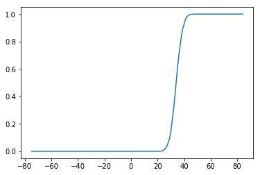
[97]:
rm_dict[model]['nonlinearity'] = nonlinearity
ISI-dependent penalty¶
[ ]:
outdir = BASEDIR + 'precalculated_WNI_values/'
[104]:
def fetch_ISI_WNI_data(model, rm_inference_timepoint):
st = pd.concat([pd.read_csv(BASEDIR + "model_{}__spike_times_MCM__{}.csv".format(model, whisker)) for whisker in whiskers])
# is there a spike in the estimation period?
st['spike_in_interval'] = spike_in_interval(st, rm_inference_timepoint, rm_inference_timepoint + 1)
# how long ago was the most recent spike?
st[st>rm_inference_timepoint] = np.NaN
st['ISI'] = st.max(axis=1) - rm_inference_timepoint
# collect WNI values and add them to the dataframe
wni = pd.DataFrame()
for whisker in whiskers:
# adapt according to where you saved (this loads the provided precalculated WNI values for C2 whisker)
wni_path = 'precalculated_WNI_values__model_1__{}'.format(whisker)
# wni_path = outdir + '{}__{}.csv'.format(model, whisker)
wni = pd.concat([wni, pd.read_csv(wni_path)])
st['wni_value'] = np.asarray(wni.loc[:, str(rm_inference_timepoint)])
spike_df = st[st.spike_in_interval & (st.ISI > -80) & (st.ISI < 0)]
no_spike_df = st[~st.spike_in_interval & (st.ISI > -80) & (st.ISI < 0)]
spike_isi = spike_df['ISI']
spike_wni = spike_df['wni_value']
no_spike_isi = no_spike_df['ISI']
no_spike_wni = no_spike_df['wni_value']
return spike_isi, spike_wni, no_spike_isi, no_spike_wni, st
[131]:
def get_isi_boundary_95(spike_isi, spike_wni):
def signchange(x,y):
if x / abs(x) == y / abs(y):
return False
else:
return True
def linear_interpolation_between_pairs(X,Y, x):
if x > max(X):
result = np.inf
elif x < min(X):
result = min(Y)
elif float(x) in X: # don't need to interpolate, causes assertion error
result = Y[X.index(x)]
else:
pair = [lv for lv in range(len(X)-1) if signchange(X[lv]-x, X[lv+1]-x)]
# X[lv] <= x < X[lv + 1]]
assert(len(pair) == 1)
pair = pair[0]
m = (Y[pair+1]-Y[pair]) / (X[pair+1]-X[pair])
c = Y[pair]-X[pair]*m
result = m*x+c
return result
l = zip(spike_isi, spike_wni)
if len(l) < 2:
return I.np.nan
l = sorted(l, key = lambda x: x[1]) # sort by WNI values
to_drop = len(spike_wni) / 20 # drop lowest 5%
l = l[to_drop:]
l = sorted(l, key = lambda x: x[0], reverse = True) # sort by ISI again
points = []
points.append([l[0][0], l[0][1]])
y_min = l[0][1]
for x, y in l:
if y < y_min:
points.append([x, y])
y_min = y
x_points = [p[0] for p in points]
y_points = [p[1] for p in points]
ISI_boundary = pd.Series(index = range(-80, 0))
for ISI in ISI_boundary.index:
ISI_boundary[ISI] = linear_interpolation_between_pairs(x_points, y_points, ISI)
return ISI_boundary
[132]:
spike_isi, spike_wni, no_spike_isi, no_spike_wni, st = fetch_ISI_WNI_data(1, rm_inference_timepoint)
[133]:
ISI_penalty = get_isi_boundary_95(spike_isi, spike_wni)
[134]:
def plot_ISI_cloud(ax, spike_isi, spike_wni, no_spike_isi, no_spike_wni, s = 2):
ax.scatter(no_spike_isi, no_spike_wni, c = 'k', s = s, rasterized = True)
ax.scatter(spike_isi, spike_wni, c = 'r', s = s, rasterized = True)
ax.legend(['no spike', 'spike'])
ax.set_xlim(-85, 5)
ax.set_ylim(-30, 120)
ax.set_xlabel('inter spike interval (ms)')
ax.set_ylabel('weighted net input')
[135]:
fig = plt.figure(figsize = (8,8))
ax = plt.gca()
plot_ISI_cloud(ax, spike_isi, spike_wni, no_spike_isi, no_spike_wni)
plt.plot(ISI_penalty, linewidth = 3)
[135]:
[<matplotlib.lines.Line2D at 0x2b3c5e309690>]
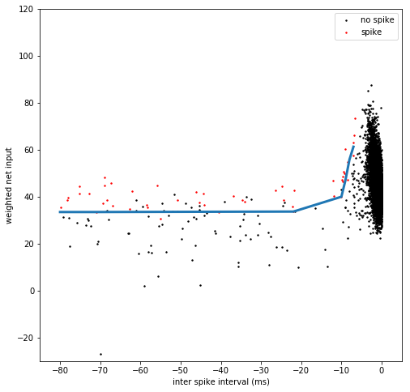
[136]:
# when using the ISI-dependent penalty for simulations, you should subtract the baseline value, i.e.
ISI_penalty_simulations = ISI_penalty - min(ISI_penalty)
[137]:
plt.plot(ISI_penalty_simulations)
[137]:
[<matplotlib.lines.Line2D at 0x2b3c5da9d3d0>]
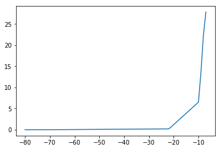
[142]:
rm_dict[model]['ISI_penalty'] = ISI_penalty
Reduced model simulations¶
[17]:
import json
import seaborn as sns
[157]:
# load reduced models which we provide, or use ones that you generated above
rm_dict = {}
for model in range(1,8):
with open(BASEDIR + "model_{}__reduced_model_parameters.txt".format(model), "r") as fp:
rm = json.load(fp)
rm_dict[model] = rm
[21]:
for model in range(1, 8):
fig = plt.figure()
plt.suptitle('model {}'.format(model), y = 1.05)
ax1 = fig.add_subplot(2,2,1)
ax2 = fig.add_subplot(2,2,3)
filters = rm_dict[model]['spatiotemporal_filters']
s_exc = filters['s_exc']
s_inh = filters['s_inh']
t_exc = filters['t_exc']
t_inh = filters['t_inh']
ax1.plot(s_exc, c = 'r')
ax1.plot(s_inh, c = 'grey')
ax1.set_xticks([0,10,20, 30])
ax1.set_xticklabels([0, 500, 1000, 1500])
ax1.set_xlabel('somadistance (um)')
ax2.plot(t_exc, c = 'r')
ax2.plot(t_inh, c = 'grey')
ax2.set_xticks(range(0, 85, 10))
ax2.set_xticklabels(range(-80, 5, 10))
ax2.set_xlabel('time (ms)')
ax1.set_ylim(-0.4, 1.2)
ax2.set_ylim(-1.2, 1.2)
ax1.set_ylabel('contribution to spiking')
ax2.set_ylabel('contribution to spiking')
ax2.set_xlim(-5, 80)
nonlinearity = pd.Series(rm_dict[model]['nonlinearity'])
nonlinearity.index = nonlinearity.index.astype(int)
nonlinearity = nonlinearity.sort_index()
ax3 = fig.add_subplot(2,2,2)
ax3.plot(nonlinearity)
ax3.set_ylabel('AP probability')
ax3.set_xlabel('WNI')
penalty = pd.Series(rm_dict[model]['ISI_penalty'])
penalty.index = penalty.index.astype(int)
penalty = penalty.sort_index()
ax4 = fig.add_subplot(2,2,4)
ax4.plot(penalty)
ax4.set_ylabel('WNI penalty')
ax4.set_xlabel('time since last spike (ms)')
plt.tight_layout()
sns.despine()
plt.show()
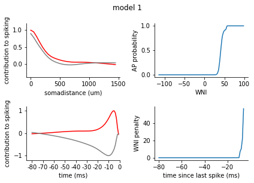
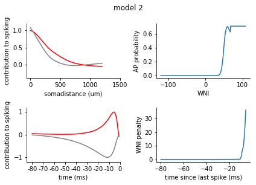
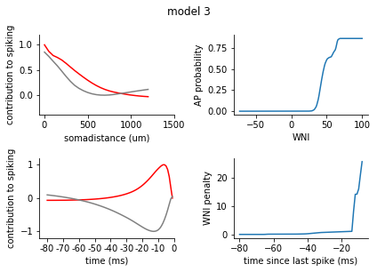
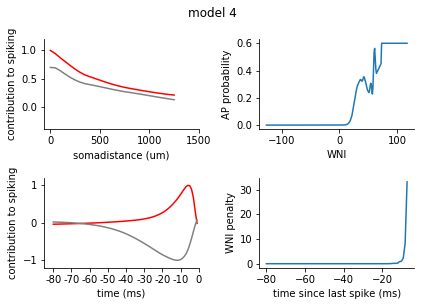
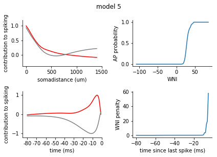
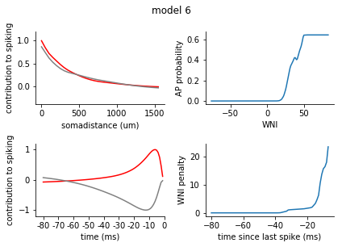
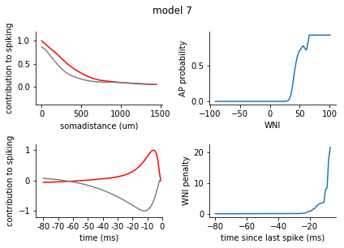
[140]:
class ReducedModel:
def __init__(self, kernel_dict, LUT, ISI_penalty, spatial_bin_size = 50):
self.kernel_dict = kernel_dict
self.LUT = LUT
self.ISI_penalty = ISI_penalty
self.spatial_bin_size = spatial_bin_size
def run(self, SAexc, SAinh, return_WNI = False):
'''Apply the reduced model to synaptic input to get a list containing output spike times.
SAexc, SAinh: numpy arrays containing spatiotemporally binned synaptic inputs, shape (spatial bins, trials, temporal bins)
return_WNI: bool
full_trace returns a dataframe containing WNI values at all timepoints along with spike times.
False returns spike times dataframe only.'''
s_exc = self.kernel_dict['s_exc']
s_inh = self.kernel_dict['s_inh']
t_exc = self.kernel_dict['t_exc']
t_inh = self.kernel_dict['t_inh']
assert SAexc.shape == SAinh.shape
LUT = self.LUT
WNI_boundary = self.ISI_penalty
spatial_bins = SAexc.shape[0]
n_trials = SAexc.shape[1]
timebins = SAexc.shape[2]
WNI_df = pd.DataFrame(index = range(n_trials), columns = range(timebins))
SAinh_cumulative = np.zeros((n_trials, timebins))
SAexc_cumulative = np.zeros((n_trials, timebins))
spike_times_df = pd.DataFrame(index = range(n_trials))
for timebin in range(timebins):
## get excitatory and inhibitory input, spatially binned for the CURRENT timebin
SAexc_timebin = np.ndarray((spatial_bins, n_trials, 1))
for dist in range(spatial_bins):
for cell in range(n_trials):
SAexc_timebin[dist][cell] = SAexc[dist][cell][timebin]
SAinh_timebin = np.ndarray((spatial_bins, n_trials, 1))
for dist in range(spatial_bins):
for cell in range(n_trials):
SAinh_timebin[dist][cell] = SAinh[dist][cell][timebin]
## apply spatial kernel to the current timebin
SAexc_timebin = sum([o*s for o, s in zip(SAexc_timebin, s_exc)])
SAinh_timebin = sum([o*s for o, s in zip(SAinh_timebin, s_inh)])
for cell in range(n_trials):
SAinh_cumulative[cell][timebin] = SAinh_timebin[cell]
SAexc_cumulative[cell][timebin] = SAexc_timebin[cell]
## apply temporal kernel
spikes = []
for cell in range(n_trials):
if timebin - 80 >= 0:
SAexc_window = SAexc_cumulative[cell][timebin-79:timebin+1]
SAinh_window = SAinh_cumulative[cell][timebin-79:timebin+1]
else:
SAexc_window = SAexc_cumulative[cell][0:timebin+1]
SAinh_window = SAinh_cumulative[cell][0:timebin+1]
SAexc_window = sum([o*s for o, s in zip(SAexc_window, t_exc[-len(SAexc_window):])])
SAinh_window = sum([o*s for o, s in zip(SAinh_window, t_inh[-len(SAinh_window):])])
## get weighted net input for each cell
WNI = SAexc_window + SAinh_window
WNI_df.iloc[cell, timebin] = WNI
# check the last 80 bins for a spike, apply WNI penalty if there was
min_index = 0 if timebin < 80 else timebin-80
if sum(spike_times_df.iloc[cell, min_index:timebin]) > 0: #if there was a spike in the last 80 ms
last_spike_interval = 80 - np.where(spike_times_df.iloc[cell, min_index:timebin] == 1)[0][-1]
penalty = WNI_boundary[-last_spike_interval]
WNI -= penalty
## get spike probability from WNI
if WNI > LUT.index.max():
spiking_probability = LUT[LUT.index.max()]
elif WNI < LUT.index.min():
spiking_probability = LUT[LUT.index.min()]
else:
spiking_probability = LUT[np.round(WNI)]
## spike or not?
if spiking_probability > np.random.uniform():
spikes.append(1)
else:
spikes.append(0)
spike_times_df[str(timebin)] = spikes
if return_WNI:
return spike_times_df, WNI_df
else:
return spike_times_df
[ ]:
model = 1
filters = rm_dict[model]['spatiotemporal_filters']
nonlinearity = pd.Series(rm_dict[model]['nonlinearity'])
nonlinearity.index = nonlinearity.index.astype(int)
nonlinearity = nonlinearity.sort_index()
penalty = pd.Series(rm_dict[model]['ISI_penalty'])
penalty.index = penalty.index.astype(int)
penalty = penalty.sort_index()
[144]:
rm = ReducedModel(filters, nonlinearity, penalty)
[145]:
sa = np.load(BASEDIR + "model_{}__binned_synapse_activations_spatiotemporal_EI__{}.npz".format(model, whisker))
sa = sa['arr_0']
SAexc = sa[0,:,:,:]
SAinh = sa[1,:,:,:]
[146]:
SAexc.shape, SAinh.shape # (spatial bins, trials ,temporal bins)
[146]:
((30, 81000, 400), (30, 81000, 400))
[147]:
spike_times = rm.run(SAexc[:, 4000:6000, :], SAinh[:, 4000:6000, :]) # select the same trials as we visualised for the MCM
[148]:
spike_times
[148]:
| 0 | 1 | 2 | 3 | 4 | 5 | 6 | 7 | 8 | 9 | ... | 390 | 391 | 392 | 393 | 394 | 395 | 396 | 397 | 398 | 399 | |
|---|---|---|---|---|---|---|---|---|---|---|---|---|---|---|---|---|---|---|---|---|---|
| 0 | 0 | 0 | 0 | 0 | 0 | 0 | 0 | 0 | 0 | 0 | ... | 0 | 0 | 0 | 0 | 0 | 0 | 0 | 0 | 0 | 0 |
| 1 | 0 | 0 | 0 | 0 | 0 | 0 | 0 | 0 | 0 | 0 | ... | 0 | 0 | 0 | 0 | 0 | 0 | 0 | 0 | 0 | 0 |
| 2 | 0 | 0 | 0 | 0 | 0 | 0 | 0 | 0 | 0 | 0 | ... | 0 | 0 | 0 | 0 | 0 | 0 | 0 | 0 | 0 | 0 |
| 3 | 0 | 0 | 0 | 0 | 0 | 0 | 0 | 0 | 0 | 0 | ... | 0 | 0 | 0 | 0 | 0 | 0 | 0 | 0 | 0 | 0 |
| 4 | 0 | 0 | 0 | 0 | 0 | 0 | 0 | 0 | 0 | 0 | ... | 0 | 0 | 0 | 0 | 0 | 0 | 0 | 0 | 0 | 0 |
| 5 | 0 | 0 | 0 | 0 | 0 | 0 | 0 | 0 | 0 | 0 | ... | 0 | 0 | 0 | 0 | 0 | 0 | 0 | 0 | 0 | 0 |
| 6 | 0 | 0 | 0 | 0 | 0 | 0 | 0 | 0 | 0 | 0 | ... | 0 | 0 | 0 | 0 | 0 | 0 | 0 | 0 | 0 | 0 |
| 7 | 0 | 0 | 0 | 0 | 0 | 0 | 0 | 0 | 0 | 0 | ... | 0 | 0 | 0 | 0 | 0 | 0 | 0 | 0 | 0 | 0 |
| 8 | 0 | 0 | 0 | 0 | 0 | 0 | 0 | 0 | 0 | 0 | ... | 0 | 0 | 0 | 0 | 0 | 0 | 0 | 0 | 0 | 0 |
| 9 | 0 | 0 | 0 | 0 | 0 | 0 | 0 | 0 | 0 | 0 | ... | 0 | 0 | 0 | 0 | 0 | 0 | 0 | 0 | 0 | 0 |
| 10 | 0 | 0 | 0 | 0 | 0 | 0 | 0 | 0 | 0 | 0 | ... | 0 | 0 | 0 | 0 | 0 | 0 | 0 | 0 | 0 | 0 |
| 11 | 0 | 0 | 0 | 0 | 0 | 0 | 0 | 0 | 0 | 0 | ... | 0 | 0 | 0 | 0 | 0 | 0 | 0 | 0 | 0 | 0 |
| 12 | 0 | 0 | 0 | 0 | 0 | 0 | 0 | 0 | 0 | 0 | ... | 0 | 0 | 0 | 0 | 0 | 0 | 0 | 0 | 0 | 0 |
| 13 | 0 | 0 | 0 | 0 | 0 | 0 | 0 | 0 | 0 | 0 | ... | 0 | 0 | 0 | 0 | 0 | 0 | 0 | 0 | 0 | 0 |
| 14 | 0 | 0 | 0 | 0 | 0 | 0 | 0 | 0 | 0 | 0 | ... | 0 | 0 | 0 | 0 | 0 | 0 | 0 | 0 | 0 | 0 |
| 15 | 0 | 0 | 0 | 0 | 0 | 0 | 0 | 0 | 0 | 0 | ... | 0 | 0 | 0 | 0 | 0 | 0 | 0 | 0 | 0 | 0 |
| 16 | 0 | 0 | 0 | 0 | 0 | 0 | 0 | 0 | 0 | 0 | ... | 0 | 0 | 0 | 0 | 0 | 0 | 0 | 0 | 0 | 0 |
| 17 | 0 | 0 | 0 | 0 | 0 | 0 | 0 | 0 | 0 | 0 | ... | 0 | 0 | 0 | 0 | 0 | 0 | 0 | 0 | 0 | 0 |
| 18 | 0 | 0 | 0 | 0 | 0 | 0 | 0 | 0 | 0 | 0 | ... | 0 | 0 | 0 | 0 | 0 | 0 | 0 | 0 | 0 | 0 |
| 19 | 0 | 0 | 0 | 0 | 0 | 0 | 0 | 0 | 0 | 0 | ... | 0 | 0 | 0 | 0 | 0 | 0 | 0 | 0 | 0 | 0 |
| 20 | 0 | 0 | 0 | 0 | 0 | 0 | 0 | 0 | 0 | 0 | ... | 0 | 0 | 0 | 0 | 0 | 0 | 0 | 0 | 0 | 0 |
| 21 | 0 | 0 | 0 | 0 | 0 | 0 | 0 | 0 | 0 | 0 | ... | 0 | 0 | 0 | 0 | 0 | 0 | 0 | 0 | 0 | 0 |
| 22 | 0 | 0 | 0 | 0 | 0 | 0 | 0 | 0 | 0 | 0 | ... | 0 | 0 | 0 | 0 | 0 | 0 | 0 | 0 | 0 | 0 |
| 23 | 0 | 0 | 0 | 0 | 0 | 0 | 0 | 0 | 0 | 0 | ... | 0 | 0 | 0 | 0 | 0 | 0 | 0 | 0 | 0 | 0 |
| 24 | 0 | 0 | 0 | 0 | 0 | 0 | 0 | 0 | 0 | 0 | ... | 0 | 0 | 0 | 0 | 0 | 0 | 0 | 0 | 0 | 0 |
| 25 | 0 | 0 | 0 | 0 | 0 | 0 | 0 | 0 | 0 | 0 | ... | 0 | 0 | 0 | 0 | 0 | 0 | 0 | 0 | 0 | 0 |
| 26 | 0 | 0 | 0 | 0 | 0 | 0 | 0 | 0 | 0 | 0 | ... | 0 | 0 | 0 | 0 | 0 | 0 | 0 | 0 | 0 | 0 |
| 27 | 0 | 0 | 0 | 0 | 0 | 0 | 0 | 0 | 0 | 0 | ... | 0 | 0 | 0 | 0 | 0 | 0 | 0 | 0 | 0 | 0 |
| 28 | 0 | 0 | 0 | 0 | 0 | 0 | 0 | 0 | 0 | 0 | ... | 0 | 0 | 0 | 0 | 0 | 0 | 0 | 0 | 0 | 0 |
| 29 | 0 | 0 | 0 | 0 | 0 | 0 | 0 | 0 | 0 | 0 | ... | 0 | 0 | 0 | 0 | 0 | 0 | 0 | 0 | 0 | 0 |
| ... | ... | ... | ... | ... | ... | ... | ... | ... | ... | ... | ... | ... | ... | ... | ... | ... | ... | ... | ... | ... | ... |
| 1970 | 0 | 0 | 0 | 0 | 0 | 0 | 0 | 0 | 0 | 0 | ... | 0 | 0 | 0 | 0 | 0 | 0 | 0 | 0 | 0 | 0 |
| 1971 | 0 | 0 | 0 | 0 | 0 | 0 | 0 | 0 | 0 | 0 | ... | 0 | 0 | 0 | 0 | 0 | 0 | 0 | 0 | 0 | 0 |
| 1972 | 0 | 0 | 0 | 0 | 0 | 0 | 0 | 0 | 0 | 0 | ... | 0 | 0 | 0 | 0 | 0 | 0 | 0 | 0 | 0 | 0 |
| 1973 | 0 | 0 | 0 | 0 | 0 | 0 | 0 | 0 | 0 | 0 | ... | 0 | 0 | 0 | 0 | 0 | 0 | 0 | 0 | 0 | 0 |
| 1974 | 0 | 0 | 0 | 0 | 0 | 0 | 0 | 0 | 0 | 0 | ... | 0 | 0 | 0 | 0 | 0 | 0 | 0 | 0 | 0 | 0 |
| 1975 | 0 | 0 | 0 | 0 | 0 | 0 | 0 | 0 | 0 | 0 | ... | 0 | 0 | 0 | 0 | 0 | 0 | 0 | 0 | 0 | 0 |
| 1976 | 0 | 0 | 0 | 0 | 0 | 0 | 0 | 0 | 0 | 0 | ... | 0 | 0 | 0 | 0 | 0 | 0 | 0 | 0 | 0 | 0 |
| 1977 | 0 | 0 | 0 | 0 | 0 | 0 | 0 | 0 | 0 | 0 | ... | 0 | 0 | 0 | 0 | 0 | 0 | 0 | 0 | 0 | 0 |
| 1978 | 0 | 0 | 0 | 0 | 0 | 0 | 0 | 0 | 0 | 0 | ... | 0 | 0 | 0 | 0 | 0 | 0 | 0 | 0 | 0 | 0 |
| 1979 | 0 | 0 | 0 | 0 | 0 | 0 | 0 | 0 | 0 | 0 | ... | 0 | 0 | 0 | 0 | 0 | 0 | 0 | 0 | 0 | 0 |
| 1980 | 0 | 0 | 0 | 0 | 0 | 0 | 0 | 0 | 0 | 0 | ... | 0 | 0 | 0 | 0 | 0 | 0 | 0 | 0 | 0 | 0 |
| 1981 | 0 | 0 | 0 | 0 | 0 | 0 | 0 | 0 | 0 | 0 | ... | 0 | 0 | 0 | 0 | 0 | 0 | 0 | 0 | 0 | 0 |
| 1982 | 0 | 0 | 0 | 0 | 0 | 0 | 0 | 0 | 0 | 0 | ... | 0 | 0 | 0 | 0 | 0 | 0 | 0 | 0 | 0 | 0 |
| 1983 | 0 | 0 | 0 | 0 | 0 | 0 | 0 | 0 | 0 | 0 | ... | 0 | 0 | 0 | 0 | 0 | 0 | 0 | 0 | 0 | 0 |
| 1984 | 0 | 0 | 0 | 0 | 0 | 0 | 0 | 0 | 0 | 0 | ... | 0 | 0 | 0 | 0 | 0 | 0 | 0 | 0 | 0 | 0 |
| 1985 | 0 | 0 | 0 | 0 | 0 | 0 | 0 | 0 | 0 | 0 | ... | 0 | 0 | 0 | 0 | 0 | 0 | 0 | 0 | 0 | 0 |
| 1986 | 0 | 0 | 0 | 0 | 0 | 0 | 0 | 0 | 0 | 0 | ... | 0 | 0 | 0 | 0 | 0 | 0 | 0 | 0 | 0 | 0 |
| 1987 | 0 | 0 | 0 | 0 | 0 | 0 | 0 | 0 | 0 | 0 | ... | 0 | 0 | 0 | 0 | 0 | 0 | 0 | 0 | 0 | 0 |
| 1988 | 0 | 0 | 0 | 0 | 0 | 0 | 0 | 0 | 0 | 0 | ... | 0 | 0 | 0 | 0 | 0 | 0 | 0 | 0 | 0 | 0 |
| 1989 | 0 | 0 | 0 | 0 | 0 | 0 | 0 | 0 | 0 | 0 | ... | 0 | 0 | 0 | 0 | 0 | 0 | 0 | 0 | 0 | 0 |
| 1990 | 0 | 0 | 0 | 0 | 0 | 0 | 0 | 0 | 0 | 0 | ... | 0 | 0 | 0 | 0 | 0 | 0 | 0 | 0 | 0 | 0 |
| 1991 | 0 | 0 | 0 | 0 | 0 | 0 | 0 | 0 | 0 | 0 | ... | 0 | 0 | 0 | 0 | 0 | 0 | 0 | 0 | 0 | 0 |
| 1992 | 0 | 0 | 0 | 0 | 0 | 0 | 0 | 0 | 0 | 0 | ... | 0 | 0 | 0 | 0 | 0 | 0 | 0 | 0 | 0 | 0 |
| 1993 | 0 | 0 | 0 | 0 | 0 | 0 | 0 | 0 | 0 | 0 | ... | 0 | 0 | 0 | 0 | 0 | 0 | 0 | 0 | 0 | 0 |
| 1994 | 0 | 0 | 0 | 0 | 0 | 0 | 0 | 0 | 0 | 0 | ... | 0 | 0 | 0 | 0 | 0 | 0 | 0 | 0 | 0 | 0 |
| 1995 | 0 | 0 | 0 | 0 | 0 | 0 | 0 | 0 | 0 | 0 | ... | 0 | 0 | 0 | 0 | 0 | 0 | 0 | 0 | 0 | 0 |
| 1996 | 0 | 0 | 0 | 0 | 0 | 0 | 0 | 0 | 0 | 0 | ... | 0 | 0 | 0 | 0 | 0 | 0 | 0 | 0 | 0 | 0 |
| 1997 | 0 | 0 | 0 | 0 | 0 | 0 | 0 | 0 | 0 | 0 | ... | 0 | 0 | 0 | 0 | 0 | 0 | 0 | 0 | 0 | 0 |
| 1998 | 0 | 0 | 0 | 0 | 0 | 0 | 0 | 0 | 0 | 0 | ... | 0 | 0 | 0 | 0 | 0 | 0 | 0 | 0 | 0 | 0 |
| 1999 | 0 | 0 | 0 | 0 | 0 | 0 | 0 | 0 | 0 | 0 | ... | 0 | 0 | 0 | 0 | 0 | 0 | 0 | 0 | 0 | 0 |
2000 rows × 400 columns
[152]:
# reformat the spike times so that instead of 1 or 0 for each timebin per cell, each cell has a list of its spike times
st_reformat = pd.DataFrame(index = range(len(spike_times.index)), columns = range(max(spike_times.sum(axis = 1))))
for cell in spike_times.index:
nspikes = 0
for timebin in spike_times.columns:
if spike_times.iloc[cell, int(timebin)] == 1:
st_reformat.iloc[cell, nspikes] = int(timebin)
nspikes += 1
[150]:
# the sensory stimulus was always applied at 245 ms
ax = plt.gca()
histogram(temporal_binning_pd(st_reformat), fig = ax)
plt.ylabel('AP probability')
plt.xlabel('time (ms)')
plt.xlim(0, 300)
[150]:
(0, 300)
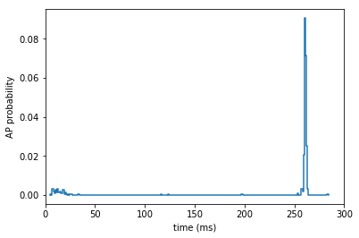
[151]:
ax = plt.gca()
rasterplot(st_reformat, fig = ax)
plt.xlabel('time (ms)')
plt.ylabel('trial index')
[151]:
<matplotlib.text.Text at 0x2b3c9ed9c510>
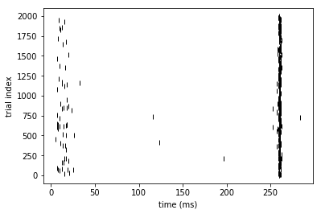